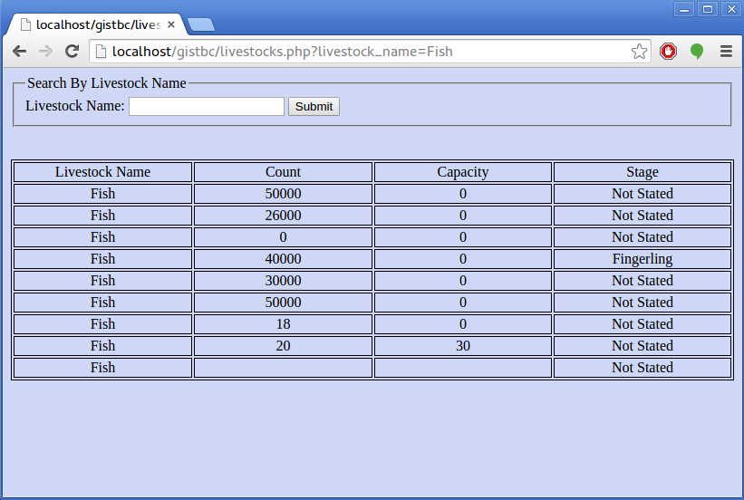

Going Through Livestock Endpoint
You can check out the crops endpoint at:
HarvestAPI Livestock
Accessing The Livestock Data Through a PHP Snippet
Now you can access the data with any platform of your choice, but for me I will be using PHP especially since
from the previous page I created a connection to HarvestAPI utilizing both PHP and cURL called CallHarvestAPI.php.
You can see a view of the snippet below:
From the above snippet called Livestocks.php , in line 9, we used an include function which
calls back the CallHarvestAPI.php snippet. On line 15 we created a variable name
called $live_name which defines $_GET['livestock_name']. The variable
'livestock_name' is in fact a field in livestock endpoint and is seen again in line 35 in our form. The aim is to
search for a livestock name to display a list with the fields in the table.
- In lines 18-19 a variable called $livestocks and it is equivalent to CallAPI function
that has 3 parameters. If you recall the CallAPI function that was in CallHarvestAPI.php the parameters
include:
- $method = 'GET'
- $url = 'harvestdata.herokuapp.com/livestock/'
- $data = array('search'=>$live_name, 'ordering'=>'capacity')
NB. For the $data variable, you can only search by livestock_name.
Livestock Endpoint consists of field names such as {
"livestock_name",
"count",
"capacity",
"stage",
"farm"
}
Also, the ordering is done by capacity in ascending order.
-
In line 22, json_decode is used to decode a JSON string and then it becomes a PHP variable
$livestock_objects .
-
In line 24, $num_livestocks keeps a count of the number of livestock.
-
In line 28, $livestocks_dem gets the livestock from results.
-
In lines 32-36, a form was created and a navigation was done by Livestock Name. Of course the name must match
'livestock_name', which is the value we are trying to get to print the rest of details of our choice.
Tables are created so that the results can be seen there and we have a foreach() loop to
print the fields of our choice.
Look at the table below:

As shown above the foreach() loop in line 51 takes care of each row that has details regarding the livestock name
(take a look at the URL locator and you will see 'livestock_name=Fish')